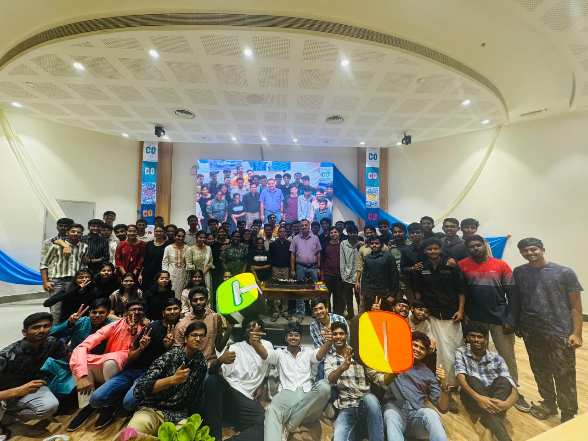
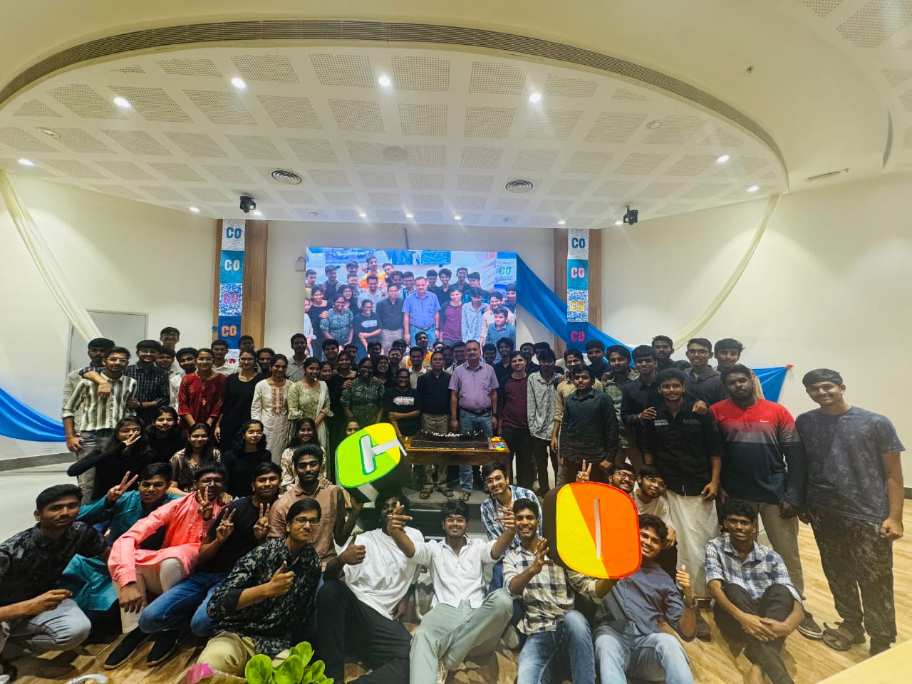
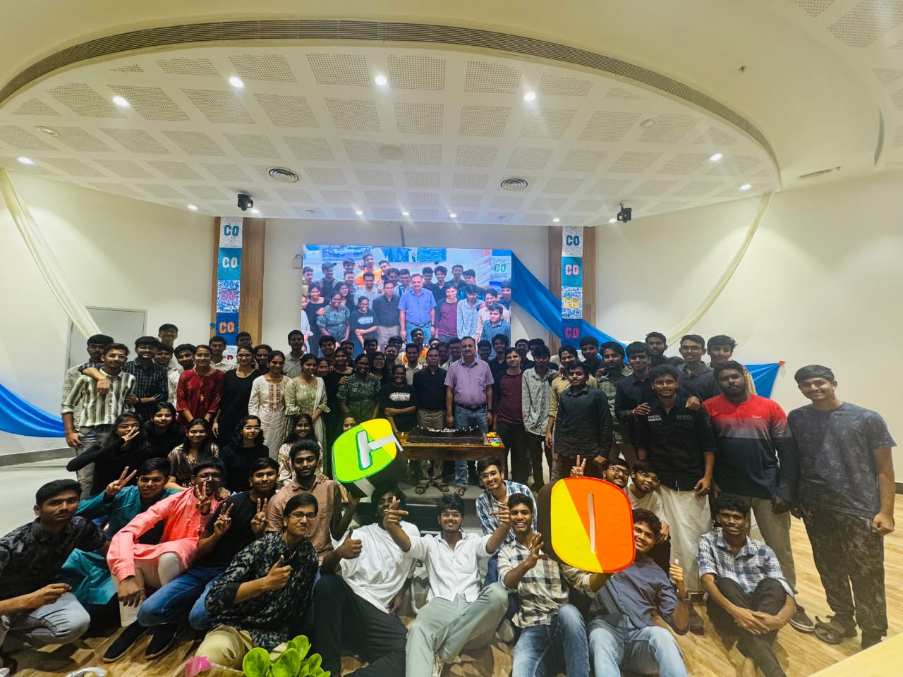
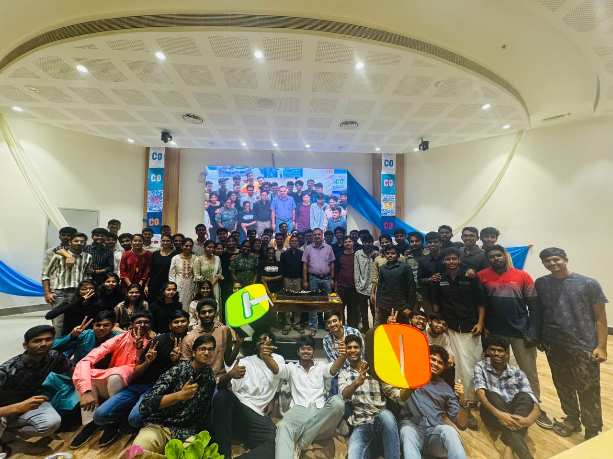

Computational Engineering is envisaged to be an interdisciplinary BTech program. These four important components in the curriculum layout of Computational Engineering include: (a) Applied Mathematics, (b) Core Engineering, (c) Data Structures & Analytics and (d) Computational Applications. Through these four pillars of the program, the student will gain proficiency not only to use the various engineering methodologies, but also get trained in some of the important curriculum of core engineering so that the bridge between computational solutions and physical principles is established.
Usage of high-end computational techniques for design of new products or processes, troubleshooting and management of its overall life-cycle is ubiquitous in modern industry. Though traditional engineering BTech curriculums introduce important computational techniques related to the specific branch of engineering, however, they do not cover the wide array of computational methods used in industry. Therefore, the graduates from the traditional engineering streams have limited exposure to these methods. Industry has to spend valuable time and resources to train these graduates on various computational methods that are used in their respective fields. To address this vital gap area of engineering education, a new interdisciplinary BTech program is introduced in Computational Engineering that aims to produce graduate engineers who will have expertise in using modern computational methods for a wide variety of industrial applications.